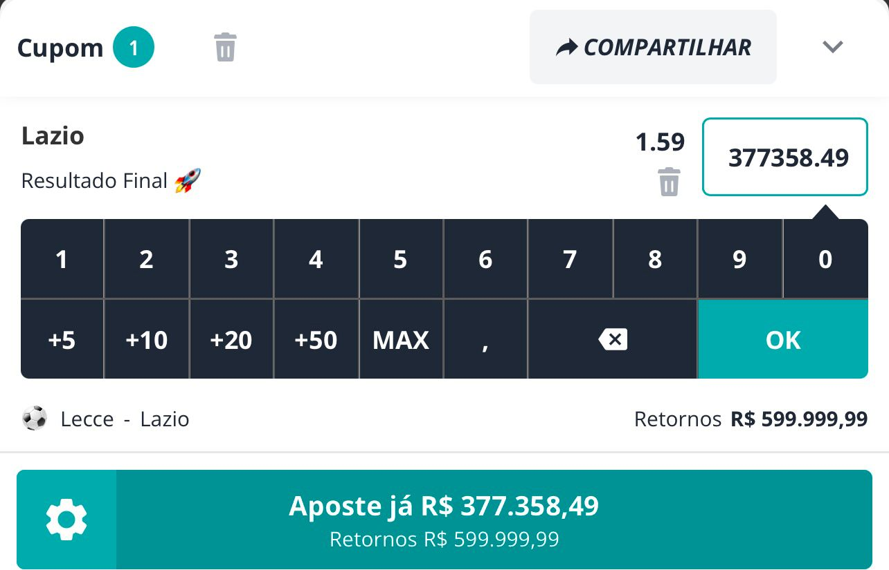
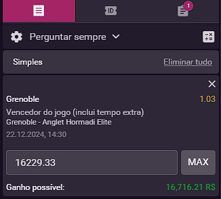
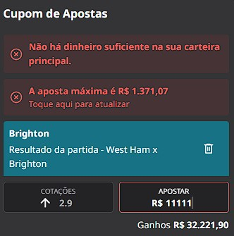
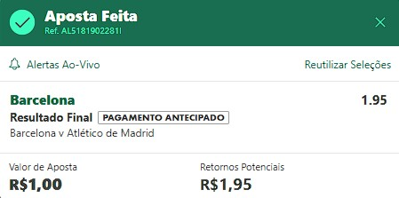
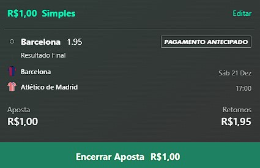

Antes de realizar a aposta, verifique se a sua casa de aposta tem a opção de verificar a quantidade maxima que se pode apostar. Caso apenas uma delas tenha, primeiro verifique a quantidade maxima que se possa apostar, após ajustar na calculadora o valor da aposta, faça a aposta na outra casa, assim você garante que sua aposta vai dar certo e evita precisar dar cashout e perder dinheiro.
Caso nenhuma das casas apresente o metodo de saber as limitações, recomendo fazer aposta baixa para caso de cashout não seja perdido muito dinheiro.
Para saber quanto é a aposta máxima da Novibet, você deve entrar pelo celular. Ao clicar na aposta que deseja fazer, será exibido o botão MAX. Clicando nele, você verá qual será o valor máximo da sua aposta.
Para saber quanto é a aposta máxima da VBet, você pode entrar tanto pelo celular como pelo PC. Ao clicar na aposta que deseja fazer, será exibido o botão MAX. Clicando nele, você verá qual será o valor máximo da sua aposta.
Para saber quanto é a aposta máxima da Betfair, você pode entrar tanto pelo celular como pelo PC. Ao clicar na aposta que deseja fazer, será necessário que coloque varios números 1 na aposta até aparecer o valor máximo que pode ser feito naquela aposta.
Infelizmente a Bet365 não apresenta um meio de sabermos a aposta maxima a ser realizada, mas podemos evitar de perder dinheiro com o cashout. Lembre-se de apenas fazer este metodo se a outra casa de aposta não tenha como saber sobre a limitação.
Para isso, faça uma aposta de R$ 1 no mercado que foi passado o sinal, após isso vá para minhas apostas e de cashout. Caso você verifique que o cashout está pagando o mesmo valor da aposta, se sim, cancele ela e aposte nela primeiro, pois agora você sabe que caso não de certo na outra casa de apostas, você não ira perder dinheiro.
Caso ao dar cashout você perca dinheiro, recomendo não realizar esta aposta para evitar perdas maiores. Este metodo funciona tambem com outras casas de aposta, mas recomendo fazer apenas na Bet365.
 